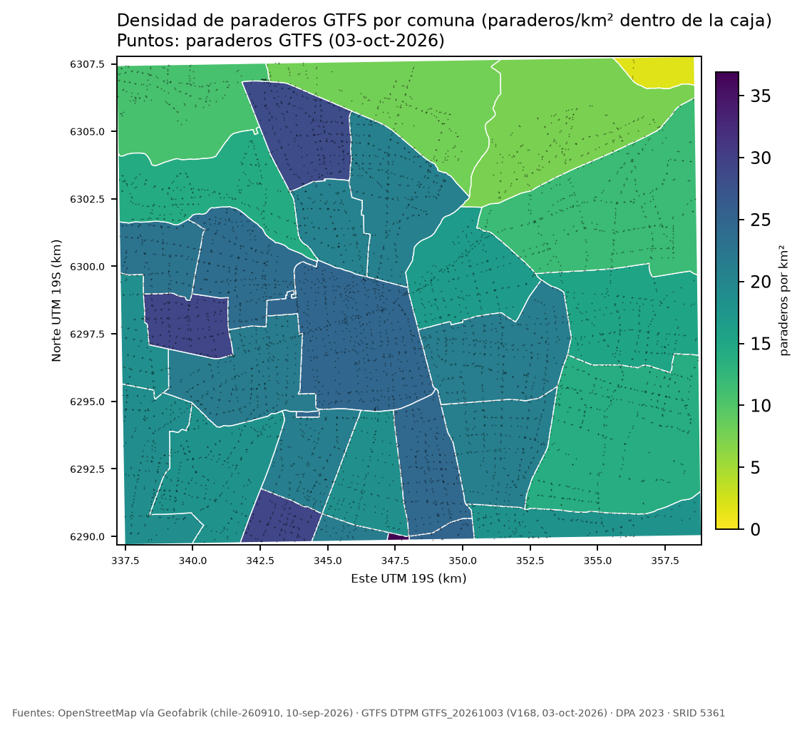
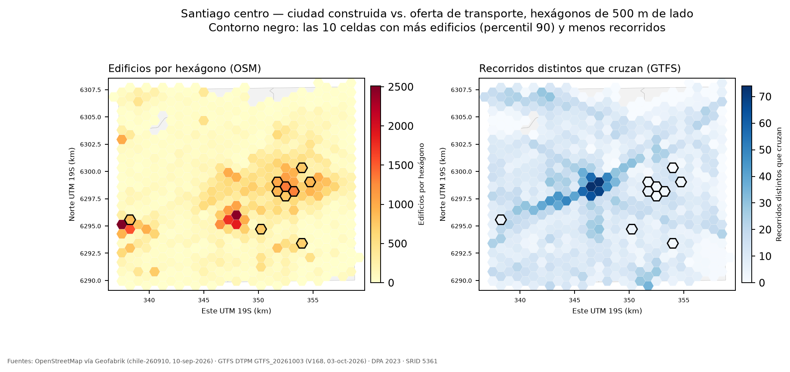
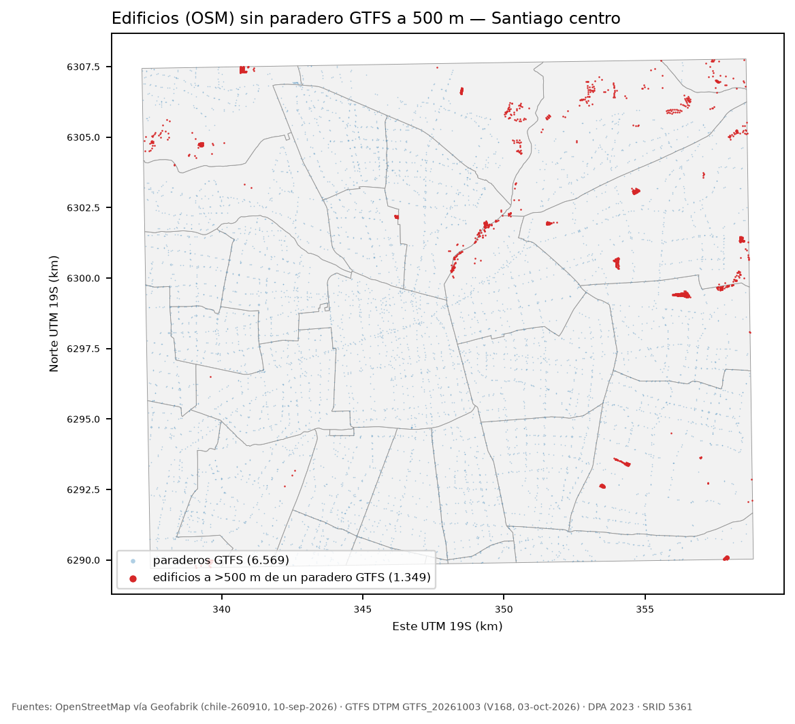

En la caja de Santiago centro hay 118.700 edificios (OSM) y 6.569 paraderos de bus en 338 rutas (GTFS). Con la distancia en línea recta, solo el 1,1 % de los edificios queda a más de 500 m de un paradero GTFS (1,0 % con los bus_stop de OSM): la ciudad construida está casi toda «cubierta» por buses. La relación interesante no es la presencia sino la intensidad: la oferta se concentra en un eje poniente–oriente y hay celdas con muchos edificios y pocos recorridos en el oriente. Las dos fuentes de paraderos coinciden en ~94 % a 50 m. Alcance: solo buses; el Metro y el tren del feed se excluyeron (ver decisiones), así que las zonas atendidas por Metro aparecen peor servidas de lo que están.
6.569 paraderos en 30 comunas. Densidad = paraderos por km² de la comuna dentro de la caja. Mayores: San Ramón 36,9 (6 paraderos en 0,2 km²), Lo Espejo 29,2, Lo Prado 29,2, Conchalí 28,4; Santiago tiene 573 (24,7/km²). Menores: Lo Barnechea 1,8 (5 en 2,8 km²), Vitacura 7,4, Huechuraba 7,9.

ST_DWithin)| Comuna | Edificios | % a >500 m, GTFS | % a >500 m, OSM |
|---|---|---|---|
| Huechuraba | 1.269 | 10,7 | 10,4 |
| Quilicura | 2.279 | 7,6 | 7,6 |
| La Florida | 953 | 4,5 | 4,5 |
| Recoleta | 3.086 | 1,9 | 1,0 |
| Providencia | 12.123 | 0,7 | 0,1 |
| Total de la caja | 118.700 | 1,14 | 0,97 |
Plan (Q2). EXPLAIN ANALYZE: Nested Loop Anti Join; lado externo Parallel Seq Scan de edificios (118.700 filas), lado interno Index Scan con idx_paraderos_gtfs_geom (Index Cond: geom && st_expand(e.punto, 500), luego el filtro exacto st_dwithin): 0,75 s. Con los índices deshabilitados, el mismo anti-join compara cada edificio con los 6.569 paraderos (97 millones de pares descartados en total): 31,0 s, ~41 veces más lento. El índice se usa sobre la tabla pequeña porque es la que se consulta 118.700 veces.
| Umbral | GTFS sin bus_stop OSM | bus_stop OSM sin GTFS |
|---|---|---|
| 25 m | 1.004 (15 %) | 995 (15 %) |
| 50 m | 381 (5,8 %) | 364 (5,5 %) |
| 100 m | 141 (2,1 %) | 137 (2,1 %) |
Totales: 6.569 paraderos GTFS y 6.567 bus_stop (81 sin nombre).
ST_Intersection, líneas contra polígonos)Con recorridos canónicos (un shape por ruta y sentido): Santiago 1.099 km (149 rutas), Las Condes 605, Estación Central 517, Peñalolén 450, Ñuñoa 387, Providencia 378. Contando todas las variantes, los km suben 17 % en Santiago y 45 % en Peñalolén (de 450 a 652 km).
| Polígonos de comuna usados | Execution Time (varía ~±15 % entre corridas) |
|---|---|
comunas_cl enteras (país) | 1.208 ms |
enteras + ST_Subdivide(256) | 547 ms (×2,2) |
comunas_zona (recortadas a la caja) | 440 ms |
recortadas + ST_Subdivide (comunas_sub) | 426 ms (×1,0) |
ST_Subdivide acelera ×2,2 cuando el polígono es grande (12.601 vértices en las comunas enteras) porque cada trozo tiene una caja ajustada y el GIST descarta más falsos positivos; recortar a la caja ya quita esos vértices (5.106) y subdividir después no suma. Plan: Nested Loop con idx_recorridos_geom en el lado de las líneas (geom && c.geom, 78 líneas por trozo) y Seq Scan sobre comunas_sub (34 filas: no necesita índice); el costo está en ST_Intersection y el Sort external merge de ~14 MB, no en el acceso. Sin idx_recorridos_geom sería 34 × 690 comparaciones de geometrías de miles de vértices. Fuente: GTFS 03-oct-2026.CROSS JOIN LATERAL + <-> + LIMIT 1)Ruta 210 (Estación Central – Puente Alto), 131 paraderos a ≤ 15 m de su trazado; para cada uno, la farmacia, hospital, clínica o consultorio más cercano (865 farmacias, 268 clínicas, 168 «doctors», 48 hospitales en la caja). Mediana 91 m, media 154 m, máximo 762 m (Av. Vicuña Mackenna, Farmacia Amaya); varios paraderos de Plaza Italia / Santa Lucía a < 10 m.
Index Scan using idx_amenidades_geom … Order By: geom <-> paraderos_gtfs.geom, LIMIT 1, Filter: amenity = ANY(…) (20 filas descartadas por el filtro en cada búsqueda): 22 ms para 200 paraderos, el índice devuelve vecinos en orden de distancia y se detiene al primero que pasa el filtro. Sin índice habría que ordenar las 20.770 amenidades por cada paradero. Poner el filtro dentro del LATERAL garantiza que el «más cercano» sea del tipo pedido.ST_HexagonGrid + vista materializada) — mapa principal
682 celdas, 603 con edificios; 34 tienen edificios y ningún recorrido. Las 10 celdas con más edificios y menos recorridos (0 a 5 recorridos; 700 a 1.340 edificios) están, nueve de diez, en el oriente (lon −70,61…−70,56), la décima en el poniente (lon −70,74).

Cruza OSM (amenidades hospital y clinic) con GTFS (viajes por día laboral por paradero, ya expandidos por frequencies.txt): paraderos y rutas distintas a ≤ 300 m, y viajes por día. No es una variante de Q2: acá el objeto es el establecimiento y la medida es oferta (viajes), no presencia de un paradero.
| Tipo | Establec. | Sin paradero a 300 m | Rutas (promedio) | Viajes/día (mediana) |
|---|---|---|---|---|
| Clínica | 268 | 6 | 13,7 | 2.226 |
| Hospital | 48 | 0 | 13,6 | 1.889 |
SRID 5361 (SIRGAS-Chile / UTM 19S) en todo: metros para distancias, largos, áreas y la grilla. OSM se reproyecta al recortar (ogr2ogr -t_srs); los puntos del GTFS (4326) se transforman con ST_Transform.
Punto interior vs. polígono. Para distancias, el edificio se representa con ST_PointOnSurface (siempre cae dentro; el centroide puede caer fuera de un polígono cóncavo) y el índice sobre puntos filtra mucho mejor que sobre polígonos; el polígono se conserva para áreas. Costo: un edificio grande se mide desde un solo punto.
Reparaciones (ST_MakeValid). 368 de 146.619 polígonos OSM eran inválidos (0,25 %; 8,9 km² declarados): Too few points 232, Invalid number of points in LinearRing 77, Self-intersection 58, Ring self-intersection 1. Tras ST_MakeValid + ST_CollectionExtract(…,3) quedan 0 inválidos, pero 309 quedaron vacíos (anillos de menos de 4 puntos, irreparables) y se excluyen. Una línea inválida no se tocó.
Shapes múltiples por ruta. Una LineString por shape_id (ST_MakeLine(punto ORDER BY shape_pt_sequence), con la secuencia como entero). Cada ruta tiene varios shapes (ida, vuelta, variantes): se marcó canónico el de más viajes por (ruta, sentido) — 586 de 690 — y se usa para medir km de red; las preguntas que cuentan rutas usan todos los shapes con DISTINCT route_id. Contar todas las variantes infla los km hasta un 45 % según la comuna.
Solo buses. El feed trae Metro (route_type 1) y trenes EFE; sus andenes se mezclaban con los paraderos y falseaban Q3 (453 vs. 381 GTFS «sin OSM» a 50 m). Se excluyen 9 rutas y 243 stops de la caja; también estaciones, accesos y nodos (location_type 1–4). Los trips con frequencies.txt se expanden por headway antes de contar viajes.
Comunas recortadas a la caja para la densidad y las áreas; ST_Subdivide a 256 vértices para los joins pesados (34 trozos).
Índices creados y cuál resultó inútil. GIST en todas las tablas con geometría, btree en cut_com, amenity, route_short_name; ANALYZE al final. Con pg_stat_user_indexes: los de paraderos_gtfs (383.070 lecturas) y paraderos_osm (263.676) son el corazón del pipeline. Inútil: idx_edificios_geom (9,8 MB, 0 lecturas): todas las consultas usan el punto interior (idx_edificios_punto, 716 lecturas). También sin lecturas: idx_calles_geom (4,2 MB; ninguna pregunta consulta calles) y los de las tablas de 30–34 filas (el planificador prefiere Seq Scan del lado exterior). Es un hallazgo del diseño, no un error.
Honestidad con el dato. Los bus_stop de OSM son los que alguien dibujó (81 de 6.567 sin nombre); el GTFS es lo que el operador declara y vale a su fecha (V168, 03-oct-2026). Distancias en línea recta, no peatonales. OSM puede estar incompleto en la periferia (cobertura aparentemente mejor). La oferta de viajes considera el día laboral y no los feriados. El Metro está fuera: toda conclusión sobre «cobertura» o «oferta» es de buses, con OSM del 10-sep-2026 y GTFS del 03-oct-2026.